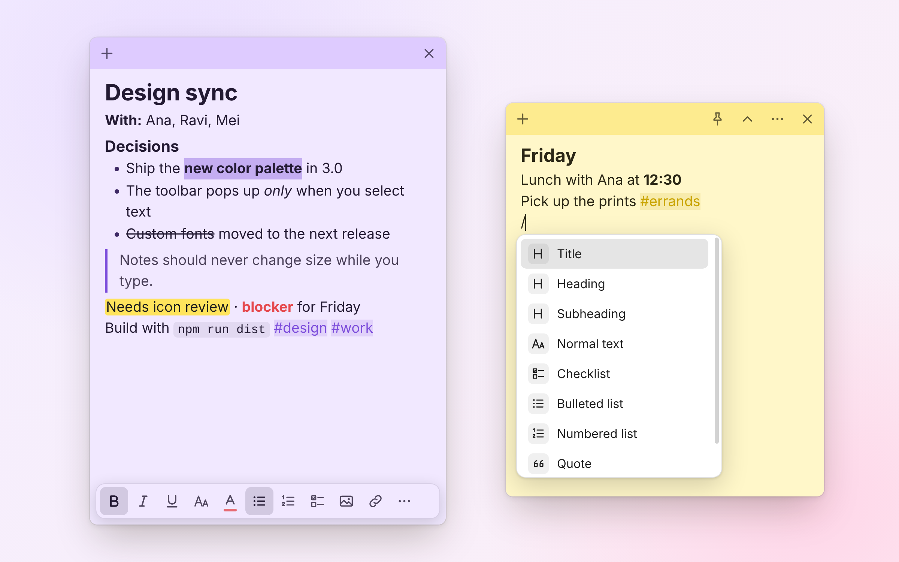
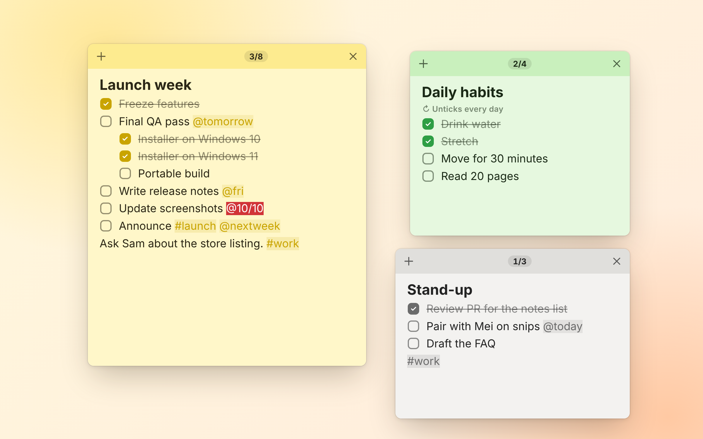
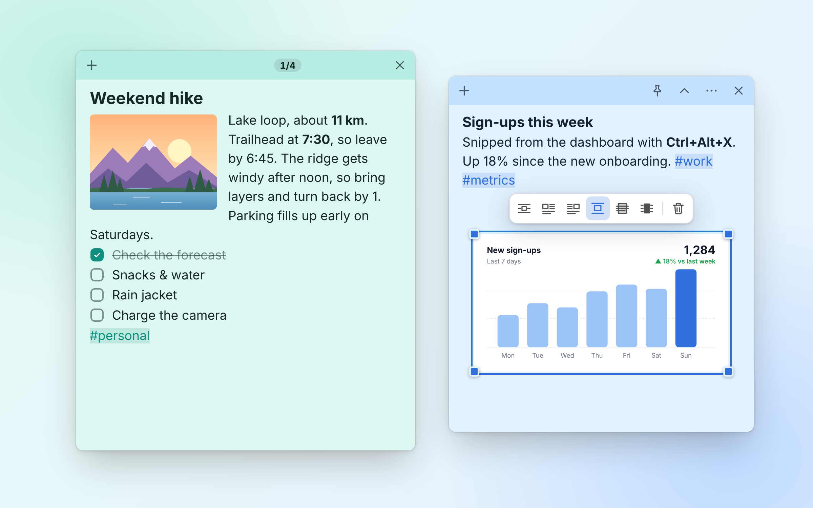
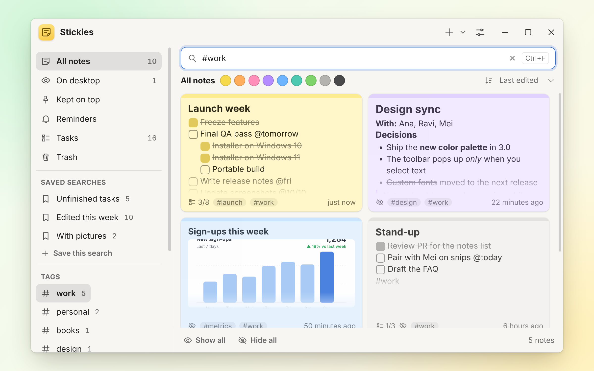
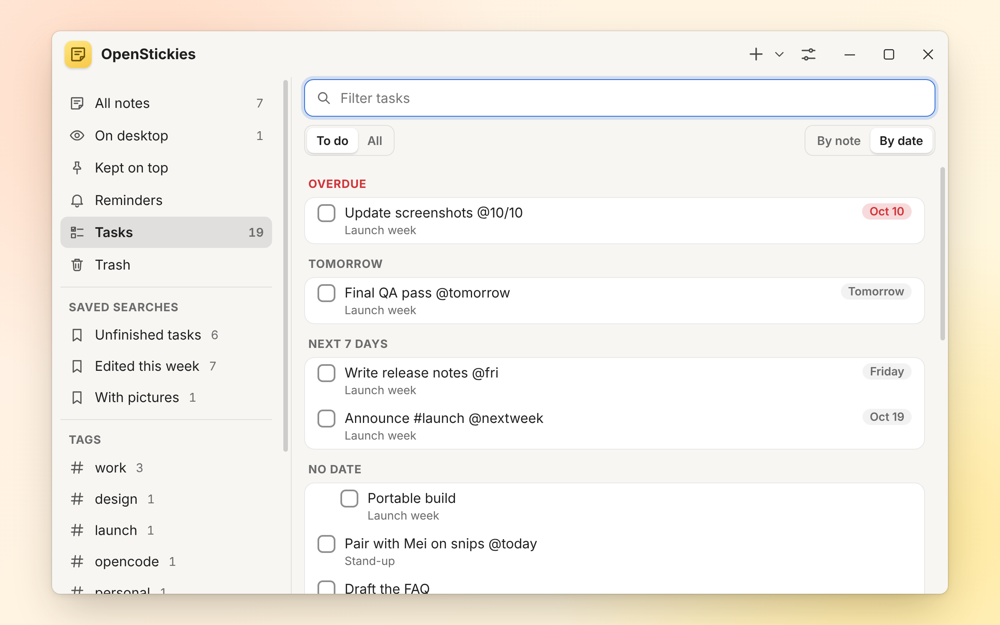
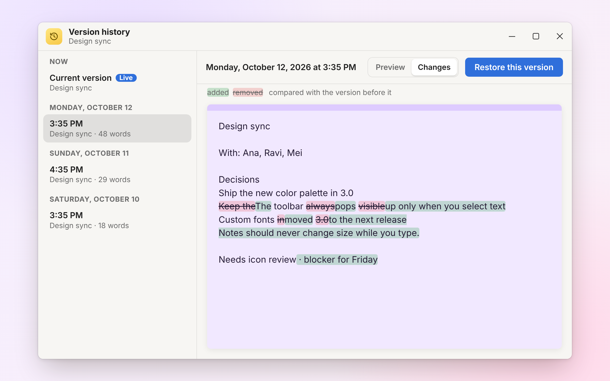
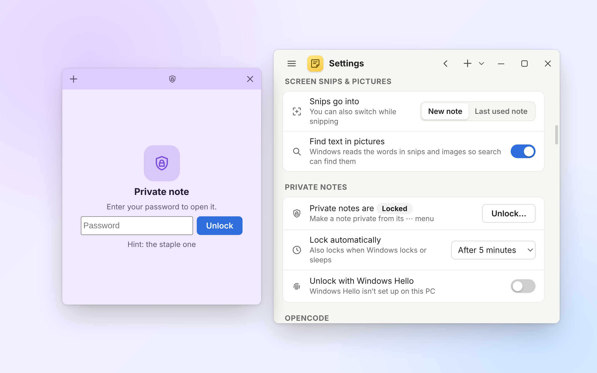
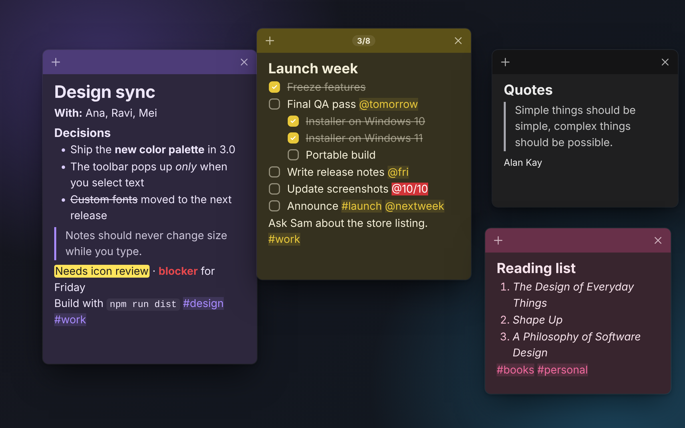
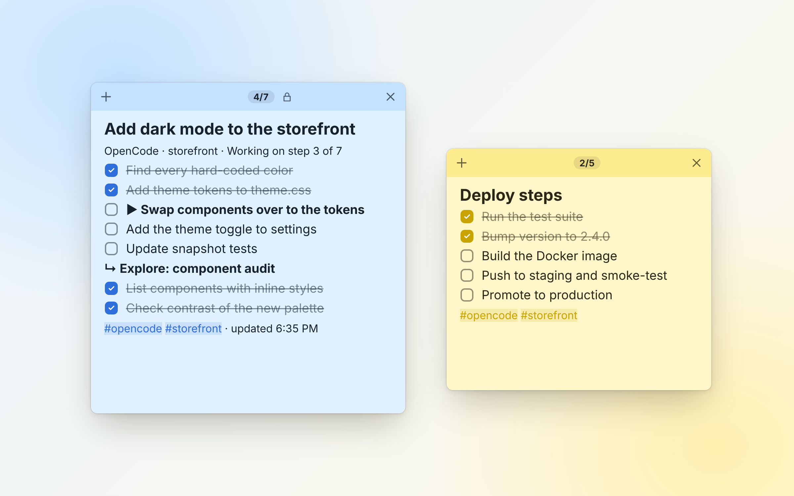

Windows
- Windows 10 and 11, as an installer or a portable app.
- OpenStickies lives in the system tray, and can open at login.
- Windows Hello can unlock private notes.
Every note is its own small floating window, like classic Stickies — now with tabs, rich formatting, code blocks, pictures, smart checklists, tags, workspaces, version history and private notes. For Windows, macOS and Linux.
For your Mac: Apple silicon Intel Other formats
Features
OpenStickies keeps the classic idea of small notes floating on your desktop, and rebuilds everything inside them.
Headings, colors, highlights, tables, code and a “/” command menu.
Up to three tabs in one note, each with its own scroll and undo.
Nested items that stay in sync, due dates and a progress count.
Snip the screen into a note; the words in pictures become searchable.
Syntax highlighting for 18 languages, with the language guessed for you.
Save note layouts as “Work” or “Home” and switch in a keystroke.
See word-by-word changes and restore any earlier version.
A solid color, a gradient or your own picture behind any note.
Encrypted on disk with AES-256-GCM, unlocked by your password.
Writing
Format as you type with Markdown-style shortcuts, or type / to insert a heading, checklist, table, image, screen snip, date, link, reminder or template.
# for a heading, - for bullets or [] for a checklist, and **bold** or ==highlight== inline.```python, or let OpenStickies guess.
Checklists
Nest items with Tab, and parents and sub-items stay in sync. A progress count like 3/8 shows in the title bar.
@today, @fri, @nextweek, @+3d or @10/20 for a due date. Overdue items turn red.
Pictures & snips
Paste, drag in or snip the screen, then lay pictures out the way you would in Word.
/snip in a note.
Organize
Type #project to tag a note and [[ to link to another. Open the notes list with Ctrl+H to search all of them.
# suggests tags you’ve already used. Ctrl+Click a tag to list every note that has it.
Type a filter into the notes list, then click Save this search to keep it in the sidebar.
#workhas:uncheckedhas:imageedited:today edited:week edited:3ddue:today due:week due:overdueis:open is:pinnedcolor:blue"call back"Tasks
The Tasks view gathers every unticked checklist item from all your notes, grouped by note or by due date.
@fri or @10/20 you type in a checklist.due:today, due:week or due:overdue.
Version history
OpenStickies keeps a snapshot whenever you come back to a note after a few minutes away, and shows exactly what changed, word by word.

Private notes
Set a password in Settings, then choose ⋯ → Make private… on any note. Its words and pictures are encrypted on disk.
If you forget the password, private notes can’t be recovered.

Dark mode
Choose System, Light or Dark in Settings. System follows your computer’s setting, and every note color has its own dark version.

New in 4.0
Version 4.0 runs on macOS and Linux as well as Windows, and adds these to every note.
Press Ctrl+Shift+T for up to three tabs in one note. They name themselves from their first line, and each keeps its own scroll and undo. Double-click or press F2 to rename one, and drag to reorder.
Syntax highlighting for 18 languages, from Python and JavaScript to SQL, Go and Rust. Choose one from the right-click menu, or let OpenStickies guess. The language is kept when you export to Markdown.
Drop a file or folder into a note to keep a shortcut to it. Open it, show it in its folder, copy its path, or drag it back out.
Double-click a picture to see it full size. Hover over a file shortcut or a shrunken picture for a quick preview.
A countdown strip and a frame that turns from green to orange to red as a reminder gets close. Pick a chime, a soft sound or none.
A solid color, a gradient with eight presets, or your own picture set to fill, fit or tile, with a dimmer to keep text readable.
Line notes up neatly on a grid you can size in Settings. Locked notes now stay put: they can’t be moved or resized.
Export every note as Markdown, text or JSON, and keep your notes in any folder you like, such as one synced with Dropbox, OneDrive or iCloud Drive.
The app speaks twelve languages: English, German, Spanish, French, Italian, Portuguese, Dutch, Polish, Russian, Japanese, Chinese and Arabic, which lays out right to left. It follows your system, or pick one in Settings → Appearance → Language.
Windows, macOS & Linux
The same notes and features everywhere, with a few things that work the way your system does.
.deb for Debian and Ubuntu.~/.config/autostart.OpenCode integration
While OpenCode works on a multi-step task, a sticky on your desktop shows its plan.
~/.config/opencode/plugins/.
The plugin also gives the agent four tools, so you can just ask: “put the deploy steps on a sticky” or “make me a checklist sticky for this refactor and tick items off as you go.”
| Tool | What it does |
|---|---|
stickies_create | New sticky with a title and Markdown content (- [ ] makes a checkbox), optional color and tags |
stickies_update | Replace the content, append to it, rename it or change its color |
stickies_check | Tick or untick a checklist item by its text or number |
stickies_list | List the stickies the agent has made (with ids), e.g. to continue one from an earlier session |
The agent can only change stickies it created. It can’t read, change or tick your own notes, and a sticky you delete can’t be edited back.
Requests with two or more distinct subtasks get a to-do list first. Quick questions don’t create a note. Task notes are blue, locked so your typing can’t clash with the agent, and tagged #opencode plus the project name.
It runs over a small API on 127.0.0.1 with a random port and token; requests from web pages are refused. Scripts can use it too — see the README.
Safety & privacy
No account to sign up for. Your notes live in a folder on your computer (where?), with several layers of protection against slips, crashes and prying eyes.
Notes, pictures, templates and settings are saved as files on your computer, in a folder you can choose.
A snapshot whenever you return to a note after a few minutes away. Restore any version, and undo a restore.
The Trash keeps your latest 300 deleted notes and 300 closed tabs, with no time limit.
Daily copies of your notes cover the last 14 days.
Saves are written atomically and flushed to disk, so a crash won’t leave a half-written file.
One file with every note, image and template. Private notes stay encrypted inside it.
AES-256-GCM, with the key protected by your password via scrypt.
Context isolation, a strict Content-Security-Policy and an allowlist sanitizer for anything pasted or imported.
Keyboard shortcuts
Global shortcuts work anywhere on your desktop, and you can change them in Settings. On a Mac, Ctrl is ⌘ and Alt is ⌥, and this page already shows them that way.
| Ctrl+Alt+N | New note |
|---|---|
| Ctrl+Alt+X | Snip the screen into a note |
| Ctrl+Alt+S | Bring all notes to the front |
| Ctrl+Alt+H | Show / hide all notes |
| Ctrl+Alt+W | Next workspace |
# ## ### | Headings |
|---|---|
- 1. | Bulleted / numbered list |
[] | Checklist item |
> | Quote |
``` --- then Enter | Code block / divider |
**bold** *italic* ~~strike~~ | Bold / italic / strikethrough |
`code` ==highlight== | Inline code / highlight |
/ | Command menu |
#project [[ | Tag / link to a note |
@fri @+3d | Due date on a checklist item |
| Ctrl+N / Ctrl+W / Ctrl+D | New / close / delete note |
|---|---|
| Ctrl+H | Notes list |
| Ctrl+Shift+T | New tab |
| Ctrl+Tab / Ctrl+Shift+Tab | Next / previous tab |
| Ctrl+1 / 2 / 3 | Go to a tab |
| F2 | Rename the current tab |
| Ctrl+B / I / U / T / E | Bold / italic / underline / strikethrough / inline code |
| Ctrl+Shift+L / O / C | Bulleted / numbered list / checklist |
| Ctrl+Alt+1 / 2 / 3 / 0 | Title / heading / subheading / normal text |
| Tab / Shift+Tab | Indent / outdent (list items, table cells) |
| Alt+Shift+↑ / ↓ | Move a list item |
| Ctrl+K | Link |
| Ctrl+F | Find in note |
| Ctrl+Shift+H | Edit HTML source |
| Ctrl+Shift+V | Paste as plain text |
| Ctrl+Shift+P | Keep on top |
| Ctrl+Shift+R | Roll up / unroll (or double-click the title bar) |
| Ctrl+= / Ctrl+- / Ctrl+0 | Zoom in / out / reset |
| Ctrl+P | |
| Ctrl+Click | Open a link, linked note or #tag |
Free for Windows, macOS and Linux. Pick the download for your computer.
Latest: Release notes
Installs OpenStickies and adds Start menu and desktop shortcuts.
OpenStickies-Setup-<version>.exe
Runs without installing anything. Download it and double-click.
OpenStickies-Portable-<version>.exe
Seeing “Windows protected your PC”? The builds aren’t code-signed, so Windows SmartScreen may warn you the first time. Click More info → Run anyway.
For Macs with an M-series chip. Open the disk image and drag OpenStickies into Applications.
OpenStickies-<version>-mac-arm64.dmg
Or the .zip
For Macs with an Intel processor. Open the disk image and drag OpenStickies into Applications.
OpenStickies-<version>-mac-x64.dmg
Or the .zip
“OpenStickies can’t be opened”? The builds aren’t signed by Apple. Control-click (or right-click) OpenStickies in Applications, choose Open, then Open again. On macOS 15 and later, try opening it once, then go to System Settings → Privacy & Security and click Open Anyway.
One file that runs without installing. Make it executable, then run it.
OpenStickies-<version>-linux-x86_64.AppImage
A .deb package that installs OpenStickies with your other apps.
openstickies_<version>_amd64.deb
Running the AppImage: chmod +x OpenStickies-*-linux-x86_64.AppImage, then open it. Some distributions need libfuse2 first. On GNOME, install the AppIndicator extension to see the tray icon.
Every release lists SHA-256 checksums in SHA256SUMS.txt.
Needs Node.js 20 or newer. npm run dist builds the Windows installer and portable app, npm run dist:mac the Mac disk images and npm run dist:linux the AppImage and .deb, all into dist/.
git clone https://github.com/ItsCetla/OpenStickies.git
cd OpenStickies
npm install
npm startFAQ
Yes. The builds aren’t code-signed, so Windows SmartScreen may show that warning the first time you run OpenStickies. Click More info → Run anyway.
The Mac builds aren’t signed by Apple, so macOS asks first. Control-click (or right-click) OpenStickies in Applications, choose Open, then Open again. On macOS 15 and later, try opening it once, then go to System Settings → Privacy & Security and click Open Anyway. You only need to do this once.
Everything stays on your computer, in a data folder: your notes in notes.json, pictures in attachments, version history in history and daily backups in backups. Settings → Open data folder takes you there.
%APPDATA%\OpenStickies\data\~/Library/Application Support/OpenStickies/data/~/.config/OpenStickies/data/To keep your notes somewhere else, such as a folder synced with Dropbox, OneDrive or iCloud Drive, use Where your notes live → Change… in Settings. If you sync the folder, run OpenStickies on only one computer at a time.
One catch: if OpenStickies is started by a packaged Windows app (for example from a terminal inside Claude Desktop), Windows redirects that copy’s data to the app’s private folder, so it has its own separate notes.
Yes. Settings → Appearance → Language offers English, German, Spanish, French, Italian, Portuguese (Brazil), Dutch, Polish, Russian, Japanese, Chinese (Simplified) and Arabic. System, the default, follows your computer’s language. Arabic flips the windows to run right to left. Your notes are never translated, only the app’s menus, buttons and settings, and the welcome note and built-in templates stay in English.
OpenStickies used to be called Stickies. The first time OpenStickies starts, it copies everything from %APPDATA%\Stickies\data\ into its own folder: notes, pictures, version history, settings, templates and private notes. The installer also replaces the old Stickies install, so you won’t have both.
The old folder stays where it was as a backup. Once you’ve checked your notes are all there, you can delete it.
No account. Your notes are saved on your computer, not in the cloud. The OpenCode integration is local too: it talks to OpenStickies over a small API on 127.0.0.1, and requests from web pages are refused.
Open Settings → Back up all notes… to save one file with every note, image and template (private notes stay encrypted). On the other computer, use Restore from backup…, which adds the backup’s notes alongside your current ones.
OpenStickies also keeps daily copies of your notes for the last 14 days, and the Trash keeps your latest 300 deleted notes and closed tabs.
It keeps running in the background. On Windows it’s in the system tray: Windows hides new tray icons behind the ^ arrow at the right end of the taskbar, so drag the yellow icon onto the taskbar to keep it in view. Click it to bring your notes back, or right-click it for more.
On a Mac, it’s in the menu bar, and clicking its Dock icon opens the notes list. On Linux it’s in the tray; on GNOME that needs the AppIndicator extension.
You can also press Ctrl+Alt+H to show or hide all notes, or Ctrl+Alt+N for a new one.
No. Private notes are encrypted with a key that only your password can unlock, so if you forget the password, they can’t be recovered. Your other notes aren’t affected.
Yes. Since version 4.0, every release has builds for Macs with Apple silicon or Intel, and for Linux as an AppImage or a .deb. See Download and the notes for Mac and Linux.